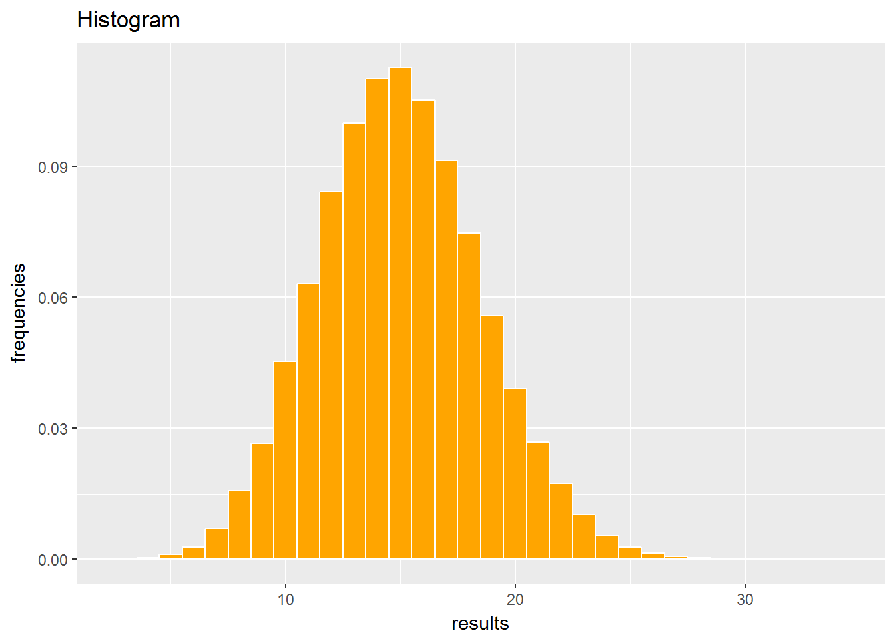

Any experiment consists of doing some activity and, in the course of it, measuring “something”. If we repeat the experiment many times, we will obtain a sample of results of the measures. The number of times we repeat the experiment is, therefore, the sample size.
Let’s think of this experiment:
If we had time to do such an experiment, the sample of results could be similar to these:
## [1] 20 15 15 13 18 18 9 14 15 13 17 6 8 14 15 14 14 17 21 18 16 14 21
## [24] 17 12 20 16 13 10 13 19 8 13 12 20 16 11 11 12 15 15 16 12 10 22 15
## [47] 9 17 18 17 15 19 14 16 17 13 12 22 15 20 13 14 16 17 17 15 12 11 16
## [70] 16 27 17 11 19 22 14 14 15 14 20 11 19 15 20 12 12 11 12 14 10 19 16
## [93] 15 15 18 11 18 12 19 12We can show in a table how many times each result has come out:
## # A tibble: 30 x 2
## how_many_6s times
## <int> <int>
## 1 15 11270
## 2 14 11005
## 3 16 10523
## 4 13 9981
## 5 17 9126
## 6 12 8422
## 7 18 7471
## 8 11 6313
## 9 19 5586
## 10 10 4530
## # ... with 20 more rowsWe see that the most repeated result is 15, which has come out 11270 times. Since the maximum possible number of times was 100000, this is a proportion of 0.1127 (or a percentage of 11.27%). This proportion is called the frequency of the result “15”.
We can collect in a table the frequencies of each result and draw a bar chart from this frequency table:
## # A tibble: 30 x 2
## how_many_6s frecuencia
## <int> <dbl>
## 1 15 0.1127
## 2 14 0.1100
## 3 16 0.1052
## 4 13 0.0998
## 5 17 0.0913
## 6 12 0.0842
## 7 18 0.0747
## 8 11 0.0631
## 9 19 0.0559
## 10 10 0.0453
## # ... with 20 more rows
The Law of large numbers says that, as we are repeating our experiment a large number of times, the final frequency table is predictable. That is, if we start from scratch and make the experiment again, same number of repetitions, to obtain a second frequency table, both tables will be extremely similar.
Indeed, the results shown above were obtained by simulating the experiment with R statistical software and several subsequent simulations of the experiment were made.Every simulation produced frequency tables with the same results and the frequencies of each result were identical up to the third decimal place, at least.
Any experiment will always end like the previous one, that is, with a sample of results and a frequency table of those results.
If the frequency table looks very much like the table we obtained above (same results and very similar frequencies for each result) we’ll say that the experiment indicates that what is being measured follows a binomial distribution of size 90 (from the number of times we’ve tossed the die) and probability 1/6 (from the number of faces of the die).
For example, if we had measured the age of the people admitted to a hospital, it could be that the frequency table looked very much like the table we obtained above (15-year-old children would be, in particular, the most common people). Then, we would say that the age of the people admitted to the hospital follows a binomial distribution of size 90 and probability 1/6.
We can give more examples if we use our imagination to accept dices with any number of faces. Then, a coin could be thought of as a two-sided die and a 52-card deck as a 52-sided dice.